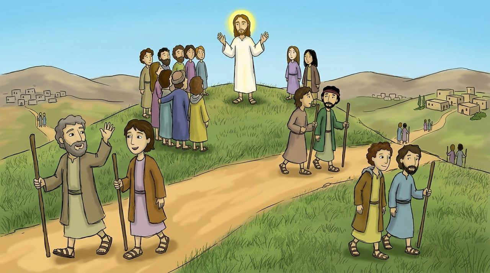
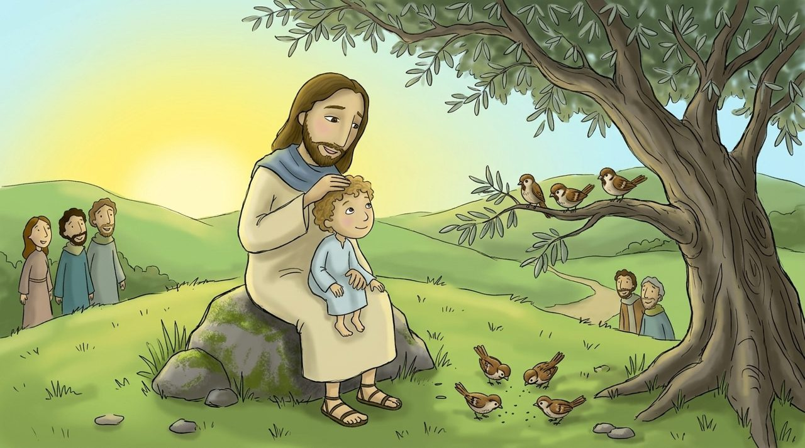
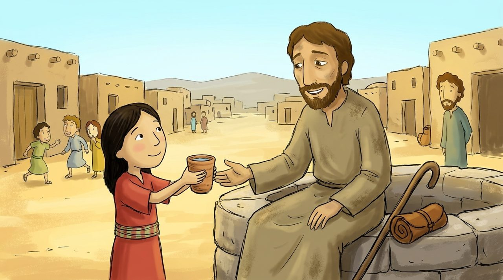

Səhnə 1 · Matta 10:1–4
On iki şagird
İsa on iki ini çağırıb onlara xəstələrə şəfa vermək qüdrəti verdi.
Peter, Andrey, Yaqub, Yəhya, Filip, Bartalmay, Tomas, Matta, digər Yaqub, Faddey, Simon və Yəhuda İskariot. Onlara deyilir.
Matta 10:1–42
Sarı sözlərə toxun, mənası çıxacaq. 🔊 düyməsi Azərbaycan dilində oxuyur.
İsa on iki ini çağırıb onlara xəstələrə şəfa vermək qüdrəti verdi.
Peter, Andrey, Yaqub, Yəhya, Filip, Bartalmay, Tomas, Matta, digər Yaqub, Faddey, Simon və Yəhuda İskariot. Onlara deyilir.

İsa şagirdlərini kəndlərə göndərdi: “Səmavi Padşahlığın yaxınlaşdığını elan edin, xəstələrə şəfa verin.”
“ almısınız, müftə də verin.” Özləri ilə çox pul və çanta götürməməyi, yalnız Allaha güvənməyi dedi.

“Mən sizi qurdların arasına quzular kimi göndərirəm.” İsa çətinliklər olacağını əvvəlcədən dedi.
“İki bir qəpiyə satılmırmı? Amma Atanızın izni olmadan onlardan biri belə yerə düşməz. Hətta başınızdakı ların hamısı sayılıb. Qorxmayın, siz çoxlu sərçədən daha dəyərlisiniz.”

“İnsanların qarşısında Məni tanıdığını deyən hər kəsi Mən də göylərdəki Atamın qarşısında tanıdığımı deyəcəyəm.”
“Şagirdimə bir kasa verən hər kəs mükafatını əsla itirməyəcək.” İsa kiçik yaxşılıqları da yadda saxlayır.
“Buna görə də qorxmayın, siz çoxlu sərçədən daha dəyərlisiniz.”
Matta 10:31 · uşaqlar üçün sadə dildə
Buna görə də , siz çoxlu daha .
Boş yerlər üçün sözləri ardıcıl seç.
Yorğun dostuna sərin su verən özünü çək.
Allahım, bir sərçənin də qayğısını çəkdiyin və saçlarımı belə saydığın üçün Sənə şükür edirəm. Qorxanda Sənin məni dəyərli saydığını xatırlamağıma kömək et. Müftə aldığım məhəbbəti bir kasa soyuq su kimi paylaşım. İsa Məsihin adı ilə dua edirəm. Amin.